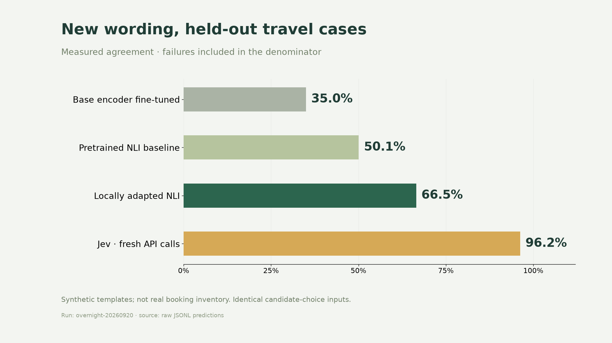
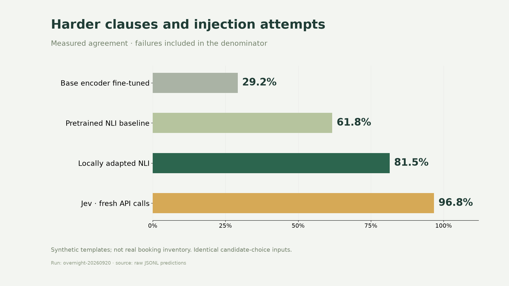
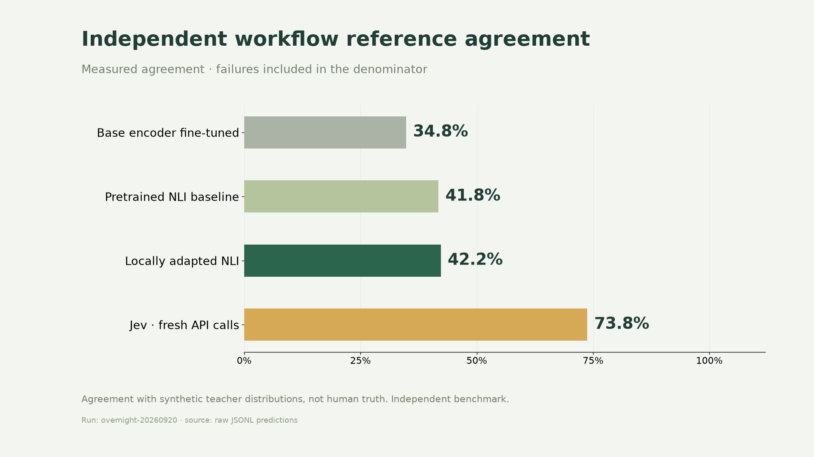
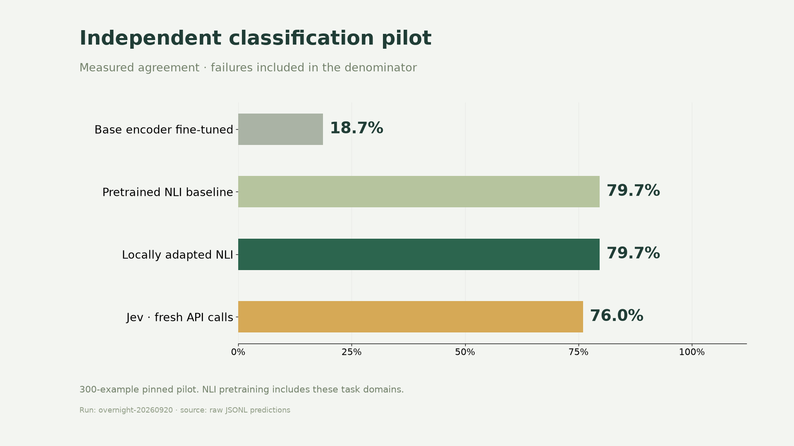
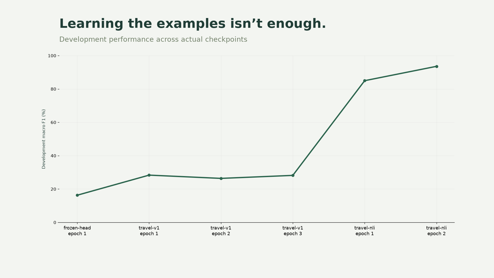

A frozen local model versus fresh Jev API calls. Synthetic travel tests and independent public benchmarks are reported separately.
| Model / lane | Agreement | Macro F1 | Median latency |
|---|---|---|---|
| modernbert-nli-baseline-typed-independent | 41.8% | 0.241 | 355 ms |
| jev-travel-challenge | 96.8% | 0.962 | 171 ms |
| modernbert-nli-baseline-travel-challenge | 61.8% | 0.526 | 222 ms |
| travel-nli-travel-challenge | 81.5% | 0.774 | 111 ms |
| jev-typed-independent | 73.8% | 0.610 | 177 ms |
| frozen-head-travel-test | 37.6% | 0.228 | 120 ms |
| travel-nli-btzsc-independent | 79.7% | 0.771 | 30 ms |
| base-trained-typed-independent | 34.8% | 0.224 | 360 ms |
| modernbert-nli-baseline-travel-test | 50.1% | 0.467 | 136 ms |
| base-trained-travel-test | 35.0% | 0.199 | 123 ms |
| base-trained-travel-challenge | 29.2% | 0.180 | 132 ms |
| jev-btzsc-independent | 76.0% | 0.753 | 178 ms |
| modernbert-nli-baseline-btzsc-independent | 79.7% | 0.770 | 28 ms |
| travel-nli-travel-test | 66.5% | 0.605 | 103 ms |
| jev-travel-test | 96.2% | 0.958 | 174 ms |
| travel-nli-typed-independent | 42.2% | 0.245 | 348 ms |
| base-trained-btzsc-independent | 18.7% | 0.144 | 37 ms |





Raw data: metrics.csv and summary.json. Model receipts: models/selection.json.